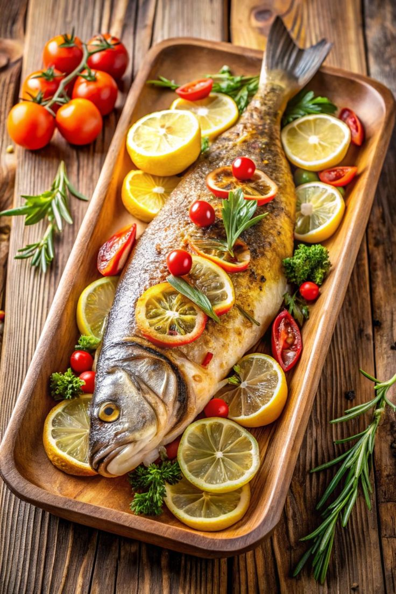
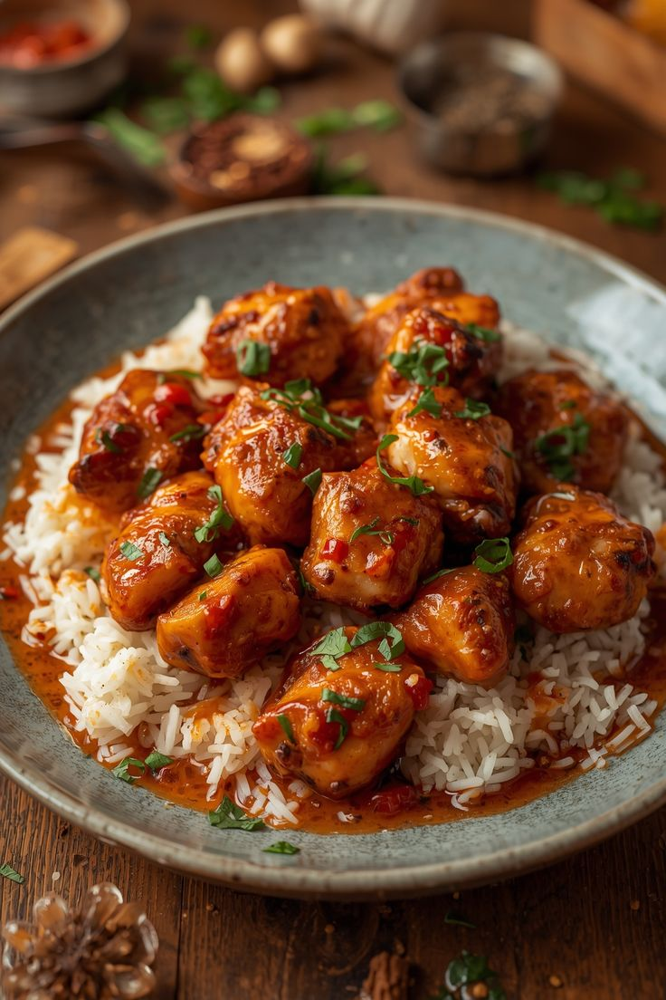
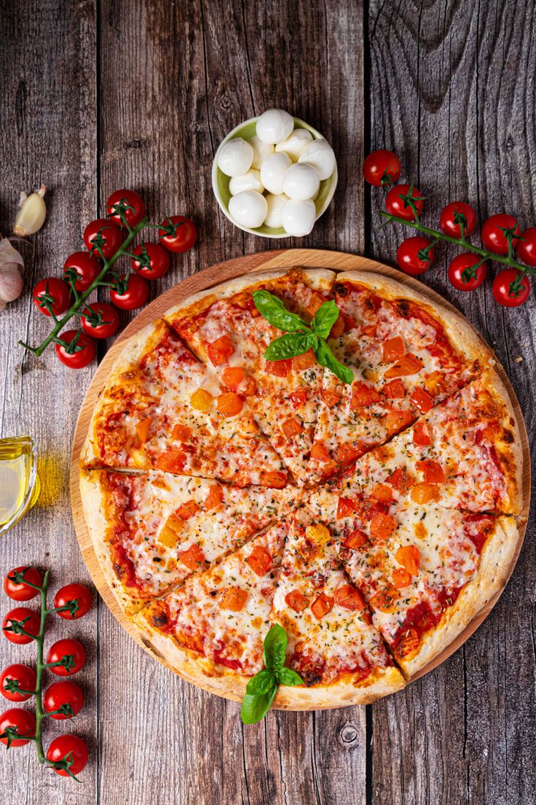
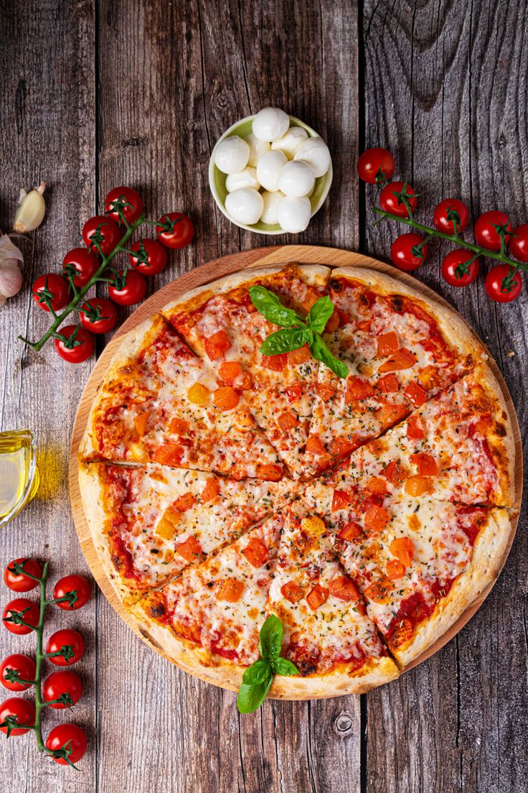

Кулинарная книга
Основные категории рецептов
  



Рецепты дня
-

Омлет с сыром
Завтрак
Ингредиенты (на 1 порцию):
- Яйца – 2 шт.
- Молоко – 2 ст.л.
- Сыр (твердый) – 30 г
- Соль, перец – по вкусу
- Масло растительное – 1 ч.л.
Приготовление:
- В миске взбейте яйца с молоком, добавьте соль и перец
- Разогрейте сковороду с маслом
- Влейте яичную смесь на сковороду, уменьшите огонь
- Посыпьте тёртым сыром и накройте крышкой. Готовьте 5-7 минут до плотности омлета
- Подавайте горячим
-

Ризотто с грибами
Обед
Ингредиенты (на 2 порции):
- Рис для ризотто (арборио) – 150 г
- Грибы (шампиньоны) – 150 г
- Овощной или куриный бульон – 400 мл
- Масло сливочное или оливковое – 20 г
Приготовление:
- Нарежьте грибы небольшими кусочками
- Разогрейте масло в сковороде и обжарьте грибы 3-4 минуты
- Добавьте рис и слегка обжарьте 1-2 минуты, помешивая
- Постепенно влейте бульон небольшими порциями, постоянно помешивая, пока рис не станет мягким и кремовым (около 18 минут)
- Снимите с огня, перемешайте и подавайте горячим
-

Запечённая семга с овощами
Ужин
Ингредиенты (на 2 порции):
- Филе семги – 2 шт. (по 150-180 г)
- Кабачок – 1/2 шт
- Масло (оливковое или сливочное) – 2 ст.л.
- Соль и перец – по вкусу
Приготовление:
- Разогрейте духовку до 200°С
- Нарежьте кабачок кружочками или кубиками, смешайте с 1 ст.л. масла, солью и перцем. Выложите на противень
- Филе семги посолите, поперчите, смажьте оставшимся маслом и положите на кабачок
- Запекайте 20-25 минут до готовности семги
- Подавайте горячим